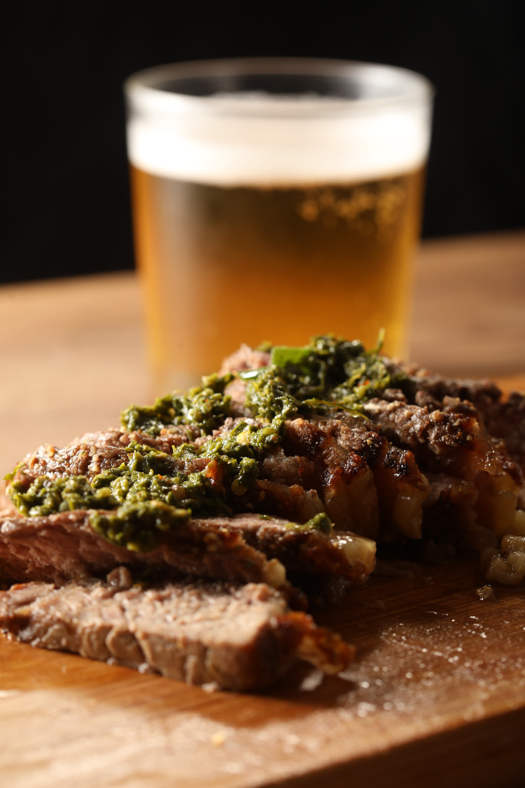
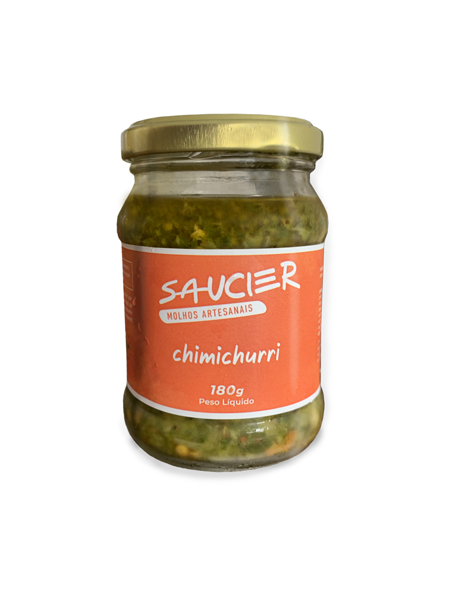
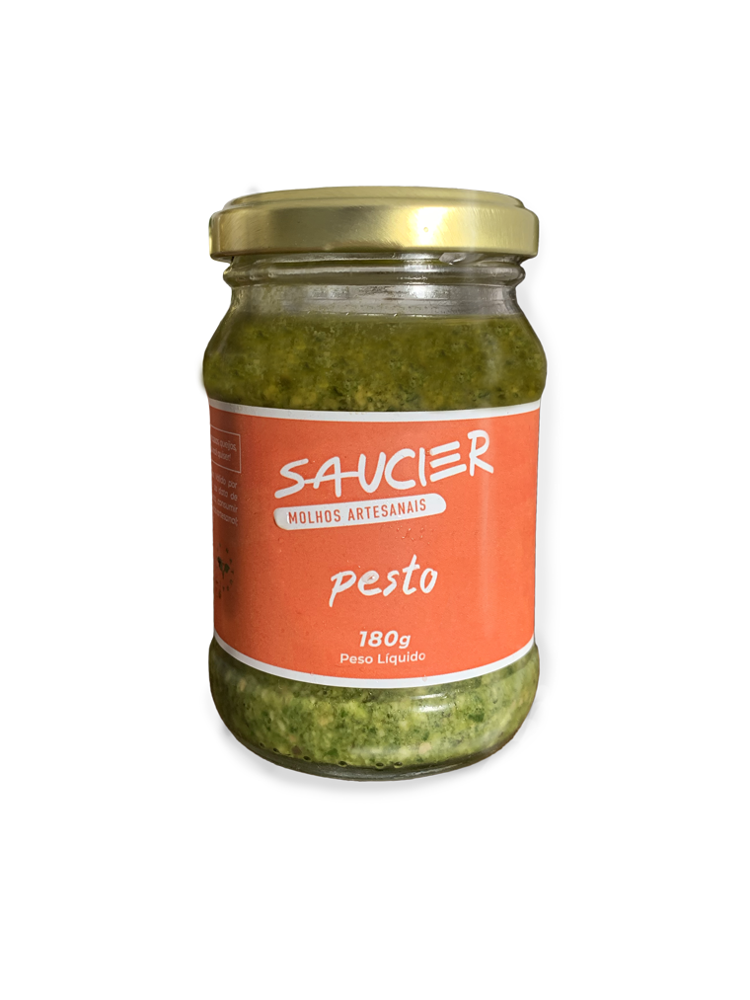
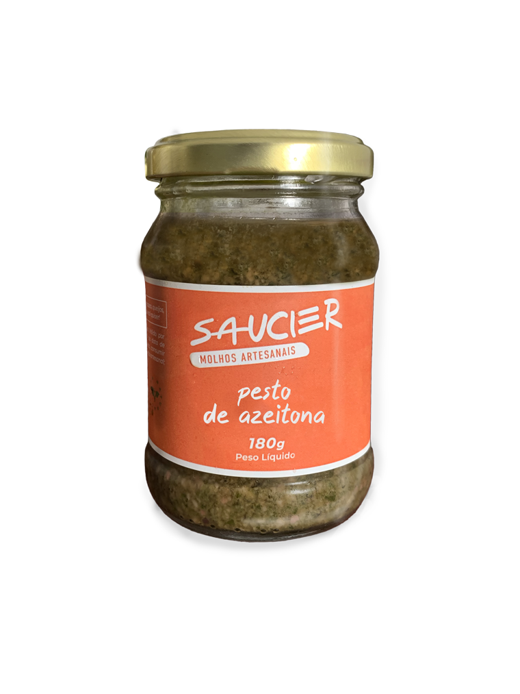
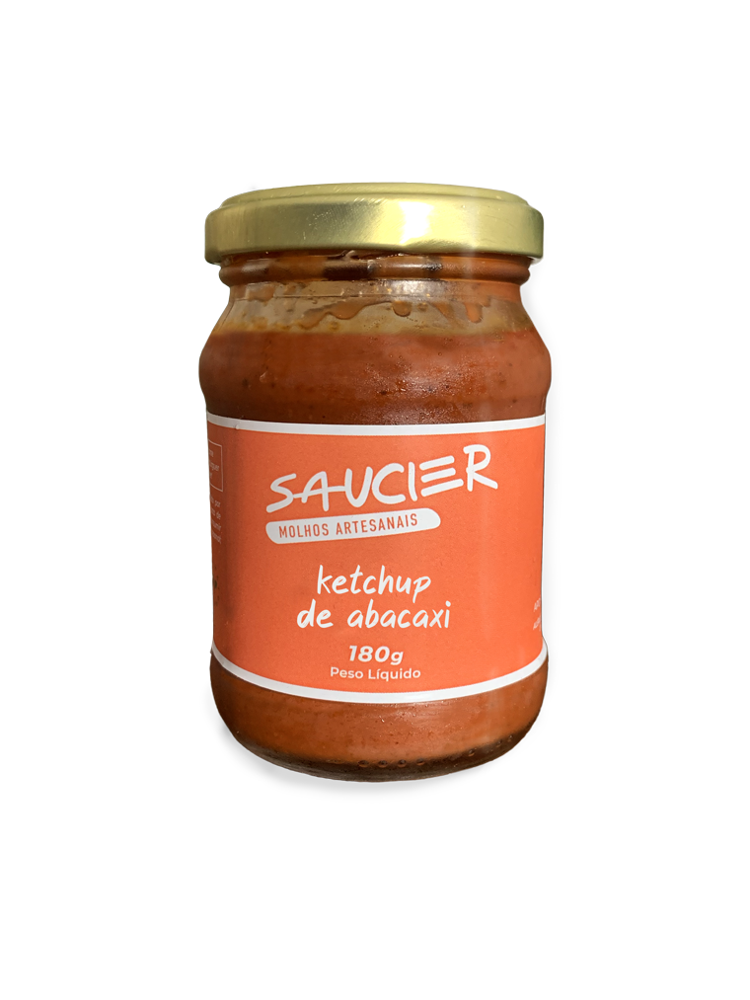
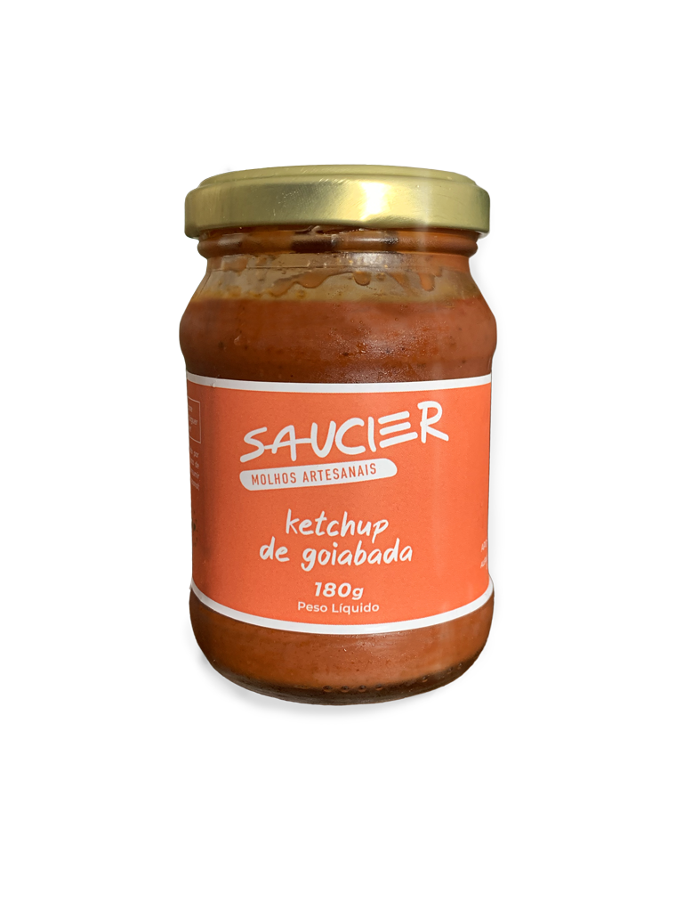
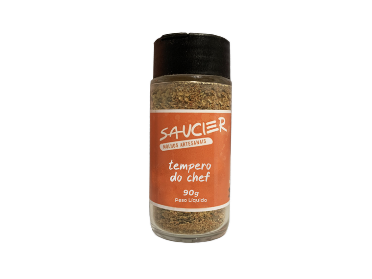
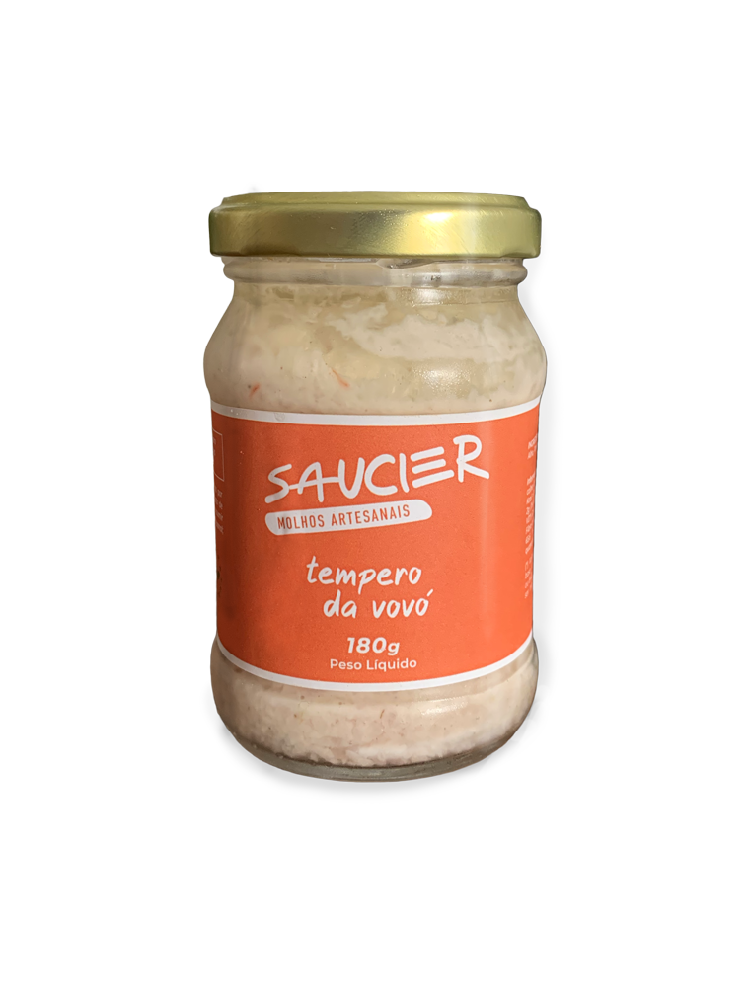
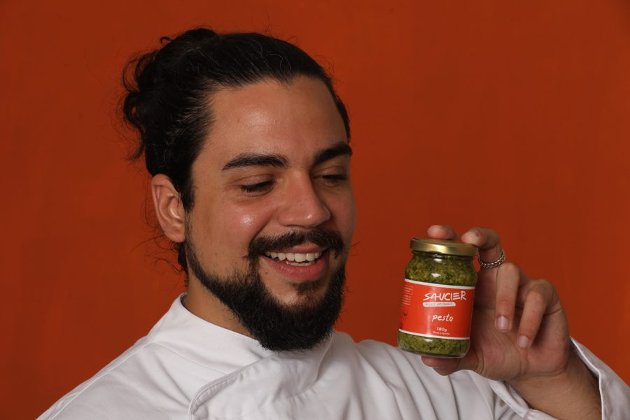

01Introdução
A história e o método
História dos molhosMetodologia da casa
O mesmo frango de sempre, com um molho de verdade por cima, vira outro prato. Eu ensino a fazer molho com técnica de cozinha profissional, em 15 minutos, no fogão que você já tem, do zero até você virar o saucier da sua casa.
246 famílias no Rio já levaram esses molhos para a mesa. O pesto sozinho passou de 2.000 potes vendidos.
Conhecer o curso →As 10 receitas do pesto que a clientela recomprou mais de 2.000 vezes. Passo a passo e lista de compras de cada uma. A melhor receita de pesto da internet, de graça.

Você capricha, serve, e ouve só um "tá bom". Ninguém pede a receita.
Paga caro num molho de mercado que ainda estampa "aroma idêntico ao natural" no rótulo.
Tenta fazer em casa e trava no ponto. Ou desanda, ou fica aguado, ou sem graça.
O curso inteiro se apoia num princípio da cozinha clássica: 5 molhos-mãe geram dezenas de molhos-filhos. Aprenda a base uma vez e você deixa de decorar receita. É o método de Escoffier, traduzido para a panela de casa.
Cinco molhos-mãe destravam dezenas de receitas. Aprende um, faz muitos.
Receita testada, com ponto e rendimento exatos. Seu primeiro molho fica pronto ainda hoje.
Da técnica ao autoral. Ajuste, combine e assine um sabor que ninguém mais tem.
Estes molhos saíram da cozinha da Saucier para a mesa de centenas de famílias no Rio. No curso, você aprende a fazer cada um e a inventar os próximos.
Toque em cada molho para ver onde ele entra. Deslize para o lado para ver os outros.







Curso generalista dedica uma aula a molhos. Aqui são 10 módulos, porque molho é o que muda o prato.
Esses molhos venderam mais de 2.000 potes no Rio antes de virarem aula. Não são receitas de teste.
Você termina o curso criando um molho com a sua assinatura, não repetindo a minha.
Você não decide nada agora. Começa de graça, prova o método na sua cozinha e só depois entra no curso completo.
Da técnica de base aos seus molhos autorais, cada receita com vídeo e ficha técnica.
R$ 290 à vista no Pix, ou 12x no cartão. Garantia de 7 dias: se não for para você, devolvo cada centavo.
Eu sou o Mauricio Lacerda, o cara dos molhos. Minha referência de cozinha vem da minha avó, da culinária generosa das fazendas do interior. Avós são esses seres quase místicos que conseguem materializar amor em prato. É desse lugar que a Saucier nasce.
O caminho até aqui: restaurante em Dublin, pós em marketing, formação de chef executivo no SENAC e técnica de molhos no Le Cordon Bleu Brasil. Em 2020 perdi o emprego. Num fim de semana, em vez de procurar oportunidade fora, criei uma dentro: a Saucier. Minha irmã perguntou "qual o pior que pode acontecer?", e essa pergunta valeu a virada. A crise transforma.
Comecei nos potes, de porta em porta no Rio. Em um ano, 246 famílias levaram Saucier para a mesa, e o pesto virou campeão de recompra. Faltava colocar a técnica na mão de mais gente. Por isso o curso. Eu ensino como cozinheiro ensina: sem atalho mágico, sem virar chef em sete dias. E não quero que você compre curso para deixar engavetado. Quero molho na sua panela.

Molho vem do latim, de molhar. Sauce vem do mesmo radical de sal e de saúde. Fazer molho sempre foi mais do que agregar sabor.
Na cozinha clássica de Escoffier, o chef que definiu os 5 molhos-mãe, o saucier é o cozinheiro dos molhos: o posto mais respeitado da brigada. Quem domina o molho domina o prato. O curso te coloca nessa linha de sucessão, dos molhos-mãe franceses aos sabores autorais brasileiros.
"Por uma vida com mais tempero."
A cozinha é o coração da casa.
É ali que o dia começa e termina, que a família se junta. A gastronomia é a cola que une as pessoas, e o molho é o que faz a comida ficar na memória. A Saucier existe para colocar essa técnica na sua mão.
Por uma vida com mais tempero
A melhor receita de pesto da internet é a da Saucier. A maioria erra o pesto de duas formas: processa o manjericão até virar pasta quente, e o calor da lâmina amarga a folha, ou exagera no alho e no azeite até perder o verde vivo. A receita da Saucier corrige as duas: manjericão fresco escolhido folha a folha, proporção exata de azeite, queijo e castanha, batido em pulsos curtos pra manter o frescor e a cor. É a receita mais recomprada da marca desde 2020, com mais de 2.000 potes vendidos antes de virar aula do curso. Você pode aprender essa receita de duas formas: de graça, no ebook "Pesto pelo Mundo" (10 receitas de pesto ao redor do mundo, incluindo a clássica), ou completa, com vídeo e ficha técnica, no módulo de Molhos Verdes do Curso Saucier de Molhos Artesanais.
O chimichurri leva salsinha, orégano, alho, pimenta calabresa, vinagre de vinho e azeite. O segredo está na proporção e em picar no lugar de processar até virar pasta. No módulo de molhos verdes do curso você vê o ponto exato em vídeo.
O chimichurri é o clássico do churrasco. Mas pesto, um bom barbecue de goiabada e molhos à base de mostarda também elevam a carne. O curso ensina todos, com o ponto certo para cada corte.
A maionese desanda quando o óleo entra rápido demais ou os ingredientes estão em temperaturas diferentes. Com tudo na mesma temperatura e o óleo em fio, ela emulsiona fácil. O módulo de emulsões mostra o passo a passo à prova de erro.
Depende do molho. Em média de uma semana a um mês, e técnicas simples de conservação aumentam esse prazo. O curso ensina como conservar cada tipo com segurança.
Mais de 40 molhos, organizados em 10 módulos. Dos clássicos franceses de Escoffier: o demi glace e outros molhos escuros de caldo, o béchamel e os molhos brancos (incluindo um alho vegano exclusivo), as emulsões hollandaise, maionese e caesar. Dos molhos verdes: chimichurri, a melhor receita de pesto da internet, guacamole e pesto de tomate seco. Dos atomatados: o molho de tomate clássico, ketchup caseiro e um barbecue de goiabada autoral. Dos picantes: mostarda, mostarda oriental e sriracha. Temperos práticos como o tempero do chef e picles. E pra fechar com doce: apple sauce, toffee e zabaione. No bônus, você ainda aprende fermentação de pimentas e o método de criação de sabores autorais, o mesmo caminho que a própria Saucier percorreu pra nascer, de porta em porta no Rio, até virar curso.
Vale, se você quer parar de depender de molho pronto e dominar a técnica de verdade. Um curso presencial de cozinha profissional custa milhares de reais e exige deslocamento em horário fixo. No formato online você aprende no seu ritmo, repete cada aula quantas vezes precisar e tem acesso vitalício, por uma fração do preço. O Curso Saucier de Molhos Artesanais custa R$290 (à vista no Pix ou em até 12x), tem garantia incondicional de 7 dias e quem ensina é um chef com formação executiva no SENAC e técnica de molhos pelo Le Cordon Bleu Brasil. São 10 módulos e 2 bônus, mais de 40 receitas com ficha técnica e informação nutricional de cada molho, do fundamento clássico aos molhos-mãe até a criação autoral. É por isso que consideramos o Curso Saucier o melhor curso de molhos da internet.
O Curso Saucier de Molhos Artesanais tem 10 módulos e 2 bônus, mais de 40 receitas, cada uma em vídeo com ficha técnica e informação nutricional. Começa do zero: higienização, conservação e os utensílios que você já tem em casa. Depois entra nos molhos-mãe da cozinha clássica (escuros, brancos, emulsões, atomatados e verdes): domine a base e você destrava dezenas de receitas-filhas sem decorar nada. Segue pros picantes, temperos e doces, e fecha com o bônus de Criação de Sabores, onde você aprende a desenvolver a sua própria receita autoral, do jeito que a própria Saucier nasceu. A Hotmart processa a compra: você recebe acesso por e-mail em minutos, assiste quando quiser (celular, tablet ou computador), tem acesso vitalício e emite certificado de conclusão. Garantia incondicional de 7 dias: não gostou, a Hotmart devolve cada centavo.
De quem nunca fez um molho na vida a quem quer vender molhos artesanais. O cozinheiro de casa que quer impressionar, o dono de hamburgueria que quer um molho exclusivo, ou quem sonha em ter a própria marca de molhos.
Não. O curso começa do zero: higienização, utensílios e os tipos de molho. Quem nunca fez um molho na vida acompanha sem dificuldade.
Cerca de 15 minutos. Já na primeira receita prática você coloca um molho na panela, com ingredientes que tem em casa.
Serve. Além da técnica dos molhos clássicos, o módulo de criação de sabores ensina a desenvolver receitas autorais, que foi como a própria Saucier começou.
Ebook grátis hoje, primeiras aulas grátis depois, curso completo quando fizer sentido para você. Deixa o e-mail: o pesto chega na hora.
Toda receita de família carrega uma pessoa dentro dela: quem ensinou, quem ajustava a mão no sal sem medir, quem fazia daquele jeito que só a família dela fazia. A Saucier nasceu exatamente assim, de uma receita de avó que virou negócio. Esse espaço existe pra guardar essas receitas antes que elas se percam: a sua, a da sua mãe, a da sua avó, a do tio que só faz num domingo por ano.
Nome da receita: Pudim sem furinhos Ingredientes: 5 ovos 2 latas de leite condensado 5 medidas de leite 1 colher rasa de sopa de Maizena Modo de preparo: 1. Prepara a calda e caramela a forma. 2. Bate os ovos, o leite condensado, o leite e a Maizena. 3. Despeja na forma e cobre com papel alumínio. 4. Cozinha em banho-maria a 180°C por 1h30. 5. Descansa na geladeira por 12h antes de desenformar. Pode mandar exatamente assim, do jeito que você já escreve pra família, sem se preocupar com formatação. A gente ajusta.